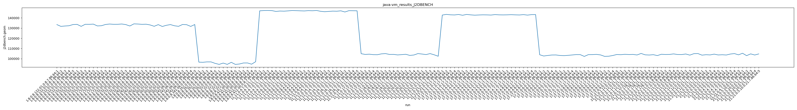
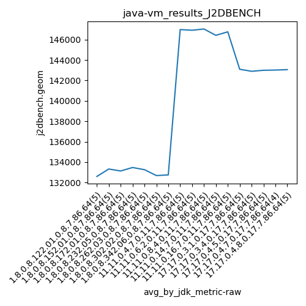
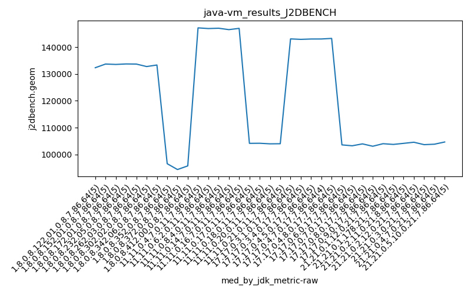
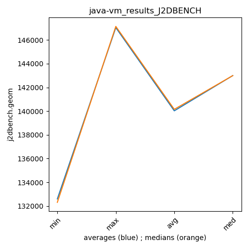

java- J2DBENCH
Context at bottom
/home/jvanek/git/benchmarks-in-nested-virtualisation-toolchain/final_results/vm_results/vm_results_RADARGUNs1
java-
J2DBENCH
/home/jvanek/git/benchmarks-in-nested-virtualisation-toolchain/final_results/vm_results/vm_results_RADARGUNs3
java-
J2DBENCH
/home/jvanek/git/benchmarks-in-nested-virtualisation-toolchain/final_results/vm_results/vm_results_DACAPO
java-
J2DBENCH
/home/jvanek/git/benchmarks-in-nested-virtualisation-toolchain/final_results/vm_results/vm_results_J2DBENCH
java-
J2DBENCH
vm_results_J2DBENCH
final score
Expected number of java- JDKs: 37
1st avgmed_alljdks_metric:
/home/jvanek/git/benchmarks-in-nested-virtualisation-toolchain/final_results/result_processing.py /home/jvanek/git/benchmarks-in-nested-virtualisation-toolchain/final_results/vm_results/vm_results_J2DBENCH j2dbench.geom False
values: [133464, 131696, 132052, 132314, 133486, 133637, 131723, 133714, 133684, 133902, 132132, 132329, 133539, 133986, 133707, 133717, 134020, 133439, 132066, 134147, 133987, 133673, 133812, 133079, 131781, 133399, 131593, 132750, 133436, 132278, 131735, 133557, 133327, 131656, 133493, 96614, 96478, 96862, 96859, 95432, 94428, 95707, 94446, 96424, 94417, 94791, 95801, 95821, 94623, 97053, 146918, 147207, 147273, 147141, 146364, 146728, 146605, 146886, 147244, 147121, 146943, 146813, 147144, 147005, 147284, 146480, 146064, 146361, 146643, 146549, 146933, 145802, 147100, 147021, 146955, 104924, 104187, 104420, 103976, 103902, 104732, 104993, 104182, 104218, 103692, 104005, 104314, 103230, 103621, 105012, 104562, 104043, 104992, 103822, 102399, 142776, 143433, 143037, 142887, 143349, 142588, 143396, 142972, 142673, 142863, 143011, 142947, 142790, 143241, 142993, 142926, 143005, 143157, 142982, 142865, 143219, 142736, 143226, 143256, 103873, 102637, 103177, 103616, 103655, 103176, 102995, 103283, 103661, 104022, 103988, 102245, 103980, 104031, 104213, 103704, 102290, 102419, 103108, 104104, 103932, 104303, 104056, 104188, 103655, 105137, 103789, 103594, 103929, 103077, 104339, 104121, 104184, 104693, 104103, 104058, 104599, 103513, 104921, 105038, 103481, 103904, 103700, 104466, 103672, 103867, 103618, 104566, 105008, 103786, 105340, 102996, 104719, 103614, 104689]

Expected number of iterations: 5
final number of values: 174 out of 185
Pass rate: 94.1%
values: (94417, 147284, 120638.13793103448, 105038)

** accuracy from all jdks and runs
more is better
MIN: 94417
MAX: 147284
AVG: 120638.13793103448
MED: 105038
Relative differences 1:
MIN-MAX: 36.0 %
MIN-AVG: 22.0 %
MIN-MED: 10.0 %
MAX-MIN: -56.0 %
MAX-AVG: -22.0 %
MAX-MED: -40.0 %
AVG-MED: -15.0 %
stored to java-.properties. sort | uniq that!
2nd avgmed_by_jdk_metric:
values: [132602.4, 133332.0, 133138.6, 133477.8, 133266.4, 132691.2, 132753.6, 96449.0, 95084.4, 95617.8, 146980.6, 146916.8, 147037.8, 146419.4, 146762.2, 104281.8, 104363.4, 104036.4, 103963.6, 143096.4, 142898.4, 142996.4, 143017.5, 143060.4, 103391.6, 103427.4, 103691.4, 103125.0, 104026.8, 103905.2, 104288.0, 104425.8, 103844.6, 104169.0, 104271.6]

values: [132314, 133684, 133539, 133717, 133673, 132750, 133327, 96614, 94446, 95801, 147141, 146886, 147005, 146480, 146955, 104187, 104218, 104005, 104043, 143037, 142863, 142993, 143005, 143219, 103616, 103283, 103988, 103108, 104056, 103789, 104184, 104599, 103700, 103867, 104689]

values: (95084.4, 147037.8, 120766.02, 104425.8)
values: (94446, 147141, 120822.31428571428, 104689)

** accuracy from all jdks where runs were avged
more is better
MIN: 95084.4
MAX: 147037.8
AVG: 120766.02
MED: 104425.8
Relative differences 1:
MIN-MAX: 35.0 %
MIN-AVG: 21.0 %
MIN-MED: 9.0 %
MAX-MIN: -55.0 %
MAX-AVG: -22.0 %
MAX-MED: -41.0 %
AVG-MED: -16.0 %
stored to java-.properties. sort | uniq that!
** accuracy from all jdks where runs were medianed
more is better
MIN: 94446
MAX: 147141
AVG: 120822.31428571428
MED: 104689
Relative differences 1:
MIN-MAX: 36.0 %
MIN-AVG: 22.0 %
MIN-MED: 10.0 %
MAX-MIN: -56.0 %
MAX-AVG: -22.0 %
MAX-MED: -41.0 %
AVG-MED: -15.0 %
stored to java-.properties. sort | uniq that!
/home/jvanek/git/benchmarks-in-nested-virtualisation-toolchain/final_results/vm_results/vm_results_SPECJBB
java-
J2DBENCH
/home/jvanek/git/benchmarks-in-nested-virtualisation-toolchain/final_results/vm_results/vm_results_JMH
java-
J2DBENCH
pass rates:
vm_results_J2DBENCH=94.1%
Context:
- vm_results
- J2DBENCH